ABOUT
US
關於
JaSo+來自對「純淨健康」的堅持與對素食生活的熱愛。
我們專注於提供優質、天然、純素的保健食品，為每一位重視身心健康、尊重生命的你打造更
安心的選擇。
我們相信健康應該是純粹而簡單的。
不添加動物成分，不使用不必要的化學添加物，每一樣產品都經過嚴格把關，
只為讓你補充營養的同時，也能安心守護地球與生命。
不論你是長年茹素者、環保實踐者，還是剛開始關注飲食與健康的新朋友，JaSo+都希望成為
你生活中最溫柔、可靠的支持。
國際認證
與標章
JaSo+食品安全的核心
透過第三方公正的認證，JaSo+能以最高標準提供產品及值得信賴的品質。
證書和標章不僅是對我們品牌和產品的認可，同時也是消費者選擇優質產品的重要依據。
高度關注消費者使用的產品效果、安全、品質，並遵守認證機構和政府法規的要求，不斷優化
我們的產品。使我們能確保您的健康更美好、簡單。
我們非常重視我們所有原料廠商的食品安全管理，我們要求他們嚴格遵守國際標準並獲得各種
認證。透過科學和客觀的管理，致力於建立最高水平的食品安全標準。
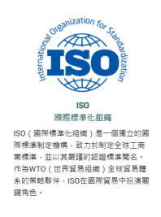
 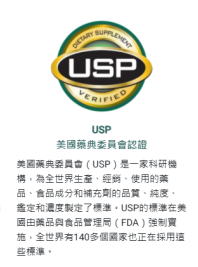
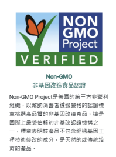
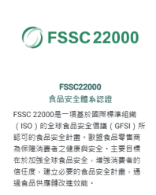
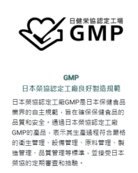
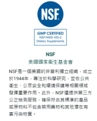
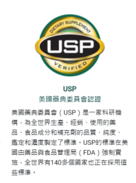
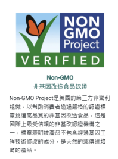
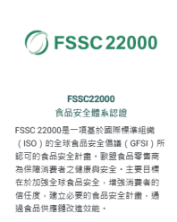
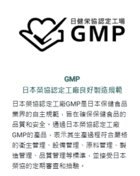
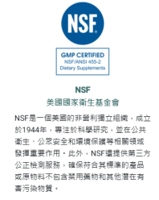

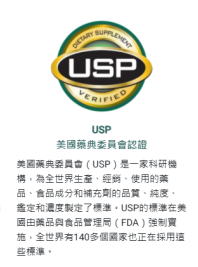
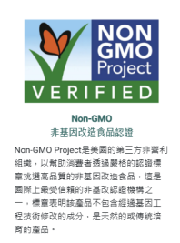
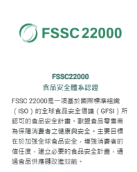
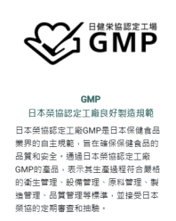
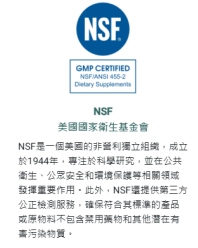
Vegan
素食認證
通過英國、美國素食協會認證，國際認證，純素有保障。
清楚標示純素、奶素等，給素食朋友們最安心的保健食品選擇。
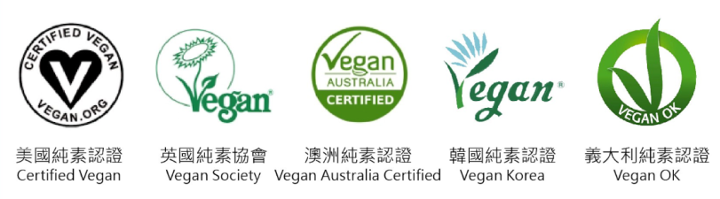
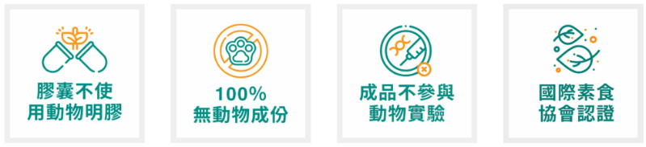